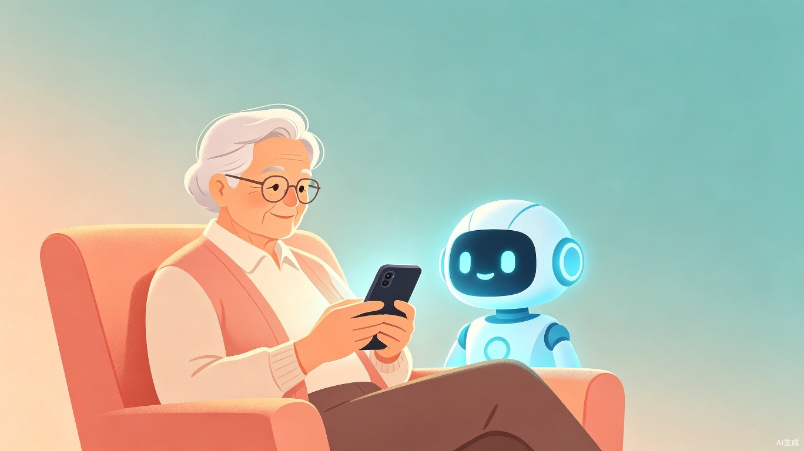

1创意名称与创意介绍
想解决什么问题
现实生活中，一些老年人即使知道某些保健品、付费课程或投资项目可能存在夸大宣传，仍然愿意相信推销人员并持续购买。他们购买的不只是商品，也是在购买推销人员提供的关心、肯定、陪伴和群体归属感，以及"生活还可以变得更好"的希望。
与此同时，老人和子女之间可能存在代沟。当老人表达购买意愿时，子女常用"这是骗人的""你怎么又相信别人"等方式直接否定。这种沟通方式容易让老人感到不被理解、没有决定权，反而更加依赖那些愿意耐心倾听他们的推销人员。
为什么会想到做这个
大概是什么产品
知心桥是一款面向老年人的 AI 消费陪伴微信小程序。它不急于否定老人，也不简单地告诉老人"不要买"，而是先耐心倾听，理解老人购买商品或课程背后的真实需求，再陪老人核验宣传信息、比较替代方案，并在获得老人同意后，帮助其与家人进行更平和的沟通。
产品采用大字体、语音优先的微信小程序形式。老人可以直接说出自己遇到的推销情况，也可以上传聊天记录、宣传图片、课程介绍或合同。AI 将帮助老人梳理需求、发现疑点、准备核验问题，并给出下一步行动建议。
2目标用户及痛点
面向哪些用户
- 经常接触保健品、课程、投资或收藏品推销的老年人
- 独居、空巢或与子女异地生活的老人
- 担心父母遭遇不良推销，却不知道如何沟通的子女
- 社区养老服务人员、社会工作者和助老公益组织
在什么场景下使用
明知有风险，仍然想买
老人参加保健品讲座，知道宣传可能有夸大成分，但舍不得的是被关心、被重视的关系。"知心桥"帮助区分商品需求与情感需求，寻找更可靠的替代服务。
子女越反对，老人越坚持
子女发现父母准备购买高价课程，立即指责。老人感到判断力和决定权被否定，拒绝继续沟通。"知心桥"帮助双方把对抗转化为理解。
不会核验复杂信息
面对产品资质、功效宣传、合同条款和退款规则，老人不知道从哪里判断，也不愿意麻烦子女。系统可生成简单易懂的核验清单。
当前痛点
3价值与意义
成为老人和子女之间的沟通缓冲带，推动家庭形成"共同核实、一起商量、尊重决定"的沟通方式。
帮助用户提取商家承诺、识别风险信号、生成核验清单和情况摘要，降低信息核验难度和沟通成本。
公益意义
未来可与社区、老年大学、志愿者组织和公益机构合作，为老人推荐真实、可信、可持续的服务：用社区兴趣活动替代虚假归属感，用正规健康咨询替代夸大宣传，用公益学习资源替代高价低质课程，用志愿者陪伴替代目的性关心。
4核心功能设计
-
AI 倾听陪伴
老人通过语音讲述事情经过。AI 不急于下结论，帮助梳理：我真正想获得什么、我为什么信任对方、如果不购买我最担心失去什么。
-
消费需求拆解
将购买动机拆分为健康、陪伴、社交、学习、认可和自主决定等需求，帮助老人看清自己真正缺少的是什么。
-
风险核验助手
不直接贴"骗子"标签，而是陪老人一起核验：商家资质、功效依据、合同条款、退款条件、紧迫感制造等七个维度。
-
冷静决定助手
提供可选冷静期，陪老人完成"三问确认"——身份能否核实、承诺是否写进合同、今天不付款是否真有损失。
-
亲情沟通桥
帮助老人把复杂想法整理成子女容易理解的信息，也将子女的指责式表达转化为尊重父母的沟通方式。
-
真实需求替代
当发现老人真正需要的是陪伴、社交或学习时，推荐社区活动、老年大学、正规健康服务等可信替代方案。
-
体面退出助手
帮助生成礼貌坚定的拒绝话术，保存合同和付款凭证，提供退款、投诉和求助流程，全程避免伤害自尊的语言。
5核心交互流程
flowchart LR
A["💬 老人语音/上传材料"] --> B["🧠 AI 倾听与需求梳理"]
B --> C["📈 消费需求拆解"]
C --> D{"🔍 风险核验"}
D -->|发现疑点| E["⏰ 冷静决定助手"]
D -->|疑点较少| F["✅ 确认信息充分"]
E --> G{"老人决定"}
F --> G
G -->|想停止| H["🤝 体面退出 + 退款流程"]
G -->|想继续| I["💑 亲情沟通桥"]
G -->|需要陪伴| J["🌱 推荐替代服务"]
I --> K["💕 家庭共同商量"]
6创新点
从"识别骗子"转向"理解老人为什么愿意相信"，从根源上降低被诱导的可能性
将消费风险核验、AI 陪伴、代际沟通和公益资源连接四者结合
不只阻止风险消费，还为老人提供情感与社会需求的替代承接方案
尊重老人自主权，默认不向子女公开私人对话，用共同验证代替单方面警告
同时服务老人和子女，改善导致风险持续发生的家庭沟通环境
不替子女监控父母，不替老人作决定；先听懂，再核实，最后一起商量
7产品边界与隐私原则
定位边界："知心桥"只提供信息整理、风险提示、沟通辅助和公共资源指引，不代替公安机关、医疗机构、市场监管部门或法律专业人士作出判断。系统不直接对个人或商家作出诈骗定性，不提供疾病诊断、投资建议或保健品功效判断。
隐私保护：老人拥有对个人信息和家庭通知的控制权。系统不会默认把老人的聊天内容发送给子女，也不允许子女在老人不知情的情况下查看其全部对话。只有经过老人明确授权，系统才会向指定联系人发送必要的信息摘要。
8创意愿景
"知心桥"希望实现的，不只是帮助老人少买一件可疑商品，而是让老人获得更真实的关心、更可靠的信息和更有尊严的决定过程。
不替子女监控父母，不替老人作决定；
先听懂，再核实，最后一起商量。